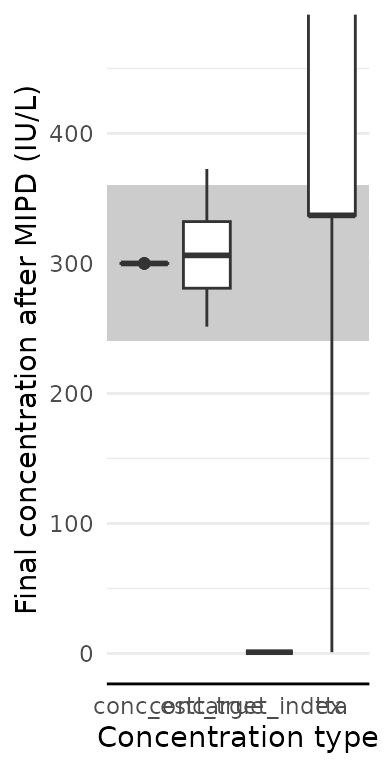
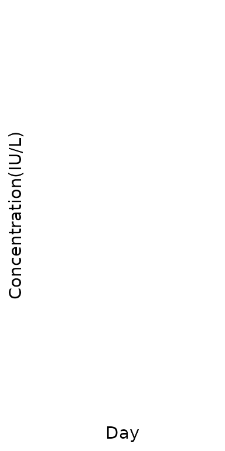

Custom initial dose nomogram, a PEG Asparaginase case study
pegasp_mipd.RmdIn this vignette, we will demonstrate the following tools:
- using {mipdtrial} to simulate a trial, with the trial design specified using R code.
- writing a custom function to handle initial dosing.
library(mipdtrial)
library(PKPDsim) # for working with models
if (!requireNamespace("pkpegasparaginasemodifiedwurthwein", quietly = TRUE)) {
install_default_literature_model("pk_pegasparaginase_modified_wurthwein")
}
# For data handling/plotting
library(dplyr, warn.conflicts = FALSE)
library(tidyr, warn.conflicts = FALSE)
library(ggplot2, warn.conflicts = FALSE)1. Define simulation parameters
Initial dosing algorithms must return a PKPDsim-style regimen object, and have access to three objects:
-
covariates: patient-level covariates -
design: a named list of PKPDsim-style covariates (created withcreate_trial_design) -
cov_mapping: described later in this vignette
Initial PEG-asparaginase dosing is 2500 IU/m2 for patients older than
22 years (inclusive) and 2000 IU/m2 for patients younger than 22 years
(exclusive), with doses capped at a maximum total dose of 3750 IU. For
our nomogram, we only need the information stored in
covariates. Let’s define this function:
asp_nomogram <- function(covariates, ...) {
if (covariates$AGE$value >= 22) {
dose <- 2500 * covariates$BSA$value
} else {
dose <- 2000 * covariates$BSA$value
}
# cap dose to a maximum of 3750
dose <- pmin(dose, 3750)
# create initial dosing regimen (see PKPDsim::new_regimen for more info)
PKPDsim::new_regimen(
amt = dose,
interval = 14 * 24, # 14 days, converted to hours
n = 5,
t_inf = 1,
type = "infusion"
)
}
initial_method <- create_initial_regimen_design(method = asp_nomogram)PEG-asparaginase has a long half-life. In this simulated trial, patients will receive 4 doses separated by 14 days levels collected every 14 days just prior to the next dose. We will adjust doses 2 and 3 to achieve a steady state asparaginase activity level of of 300 IU/L (0.3 IU/mL) (goal: 0.1 - 0.5 IU/mL)
tdm_design <- create_sampling_design(
time = c(13.9*24, 27.9*24, 41.9*24)
)
update_design <- create_regimen_update_design(
at = c(2, 3),
anchor = "dose",
dose_optimization_method = map_adjust_dose
)
target_design <- create_target_design(
targettype = "cmin",
targetvalue = 300,
at = 4,
anchor = "dose"
)
evaluation_design2 <- create_eval_design(
evaltype = c("conc", "auc24"),
at = c(14, 28, 42),
anchor = "day"
)
model_design <- create_model_design(lib = "pkpegasparaginasemodifiedwurthwein")
initial_method <- create_initial_regimen_design(method = asp_nomogram)
design <- create_trial_design(
sampling_design = tdm_design,
target_design = target_design,
regimen_update_design = update_design,
initial_regimen_design = initial_method,
sim_design = model_design,
est_design = model_design,
eval_design = evaluation_design2
)2. Create a set of digital patient covariates
We will create an example data set of 20 individuals originally drawn from the NHANES data set. This data set was created from survey data collected by the US National Center for Health Statistics from a general sampling of the US population, and is available in the NHANES R package.
dat <- data.frame(
ID = 1:20,
Sex = rep(c(0, 1), c(7L, 13L)),
Age = c(10, 9, 13, 11, 6, 16, 9, 4, 9, 8, 16, 8, 17, 12, 16, 8, 3, 17, 13, 7),
Weight = c(
38.6, 53.1, 45.1, 43.4, 20.7, 48.7, 59.7, 17, 29.8, 35.2, 73.2, 40.1, 72.3,
57.7, 88.9, 24.6, 11.6, 103.8, 74, 25.5
),
Height = c(
141.8, 139.2, 157.6, 153.8, 112.9, 158.4, 146.7, 105.4, 133.1, 130.6, 172,
128.4, 176, 158.9, 183.3, 125.6, 89.9, 181.5, 173.7, 129.6
),
BSA = c(
1.233, 1.433, 1.405, 1.362, 0.806, 1.464, 1.56, 0.705, 1.05, 1.13,
1.87, 1.196, 1.88, 1.596, 2.128, 0.926, 0.538, 2.288, 1.89, 0.958
)
)We also need to link the covariates in our data set to the covariates expected in the model:
-
To check which covariates are required for your model use
PKPDsim::get_model_covariates():get_model_covariates(model_design$model) #> [1] "AGE" "SEX" "HT" "WT" -
To check which covariates are in your data set use
colnames():colnames(dat) #> [1] "ID" "Sex" "Age" "Weight" "Height" "BSA"
After checking the covariates, we can link them in a named character vector, where the model covariates are names and the data covariates are values. Because our initial dosing nomogram relies on BSA, we also need to include BSA in this mapping object.
cov_map <- c(
AGE = "Age",
WT = "Weight",
HT = "Height",
SEX = "Sex",
BSA = "BSA"
)3. Simulate a trial!
To run our trial, we just call run_trial()! This
function does a lot under-the-hood.
For inter-individual variability terms, we will use the inter-individual variability described by our model, since this should reflect the distribution in patient pharmacokinetics. Later, we will estimate the individual PK parameters using our estimation model and the measured TDMs we “collect”.
For residual error terms, we will use the residual error of our model, since this is supposed to reflect the unexplained error (assay error, etc.). This function creates a data frame of error to add to each simulated concentration to produced a measured therapeutic drug monitoring sample.
res <- run_trial(data = dat, design = design, cov_mapping = cov_map, seed = 1)
#> ================================================================================================================================================================================================================================================================================================================================================================================================================================================================================================================================================================================================================================================================================================================================================================================================================================Here are the first few rows of our simulation results:
head(res$final_exposure)
#> id conc_true conc_est tta
#> 1 1 290.6750 299.9586 673
#> 2 2 326.4004 299.9957 673
#> 3 3 289.9764 299.9648 673
#> 4 4 315.6666 300.0880 673
#> 5 5 291.9871 300.1848 673
#> 6 6 389.1166 299.9973 Inf4. Analyze results
How well did our patients get to target?
res$final_exposure |>
pivot_longer(-id, names_to = "conc_type", values_to = "conc") |>
ggplot(aes(x = conc_type, y = conc)) +
geom_rect(
aes(
xmin = -Inf, xmax = Inf,
ymin = target_design$min, ymax = target_design$max,
),
fill = "grey80"
) +
geom_boxplot() +
coord_cartesian(ylim = c(0, target_design$max * 1.3)) +
labs(
x = "Concentration type",
y = "Final concentration after MIPD (IU/L)"
)
We can also check how well our patients did across days 14, 28, and 42.
res$eval_exposure |>
dplyr::filter(type == "conc") |>
dplyr::mutate(time = time/24) |>
ggplot(aes(x = time, y = value, group = time)) +
geom_boxplot() +
labs(
x = "Day",
y = "Concentration(IU/L)"
)
While further work is needed to establish a realistic upper toxicity threshold to inform the therapeutic window of PEG-asparaginase, an MIPD approach informed by AAL levels which are already germane to therapeutic care with PEG-asparaginase may translate to better target attainment and cost savings. For further details, see Brooks et al., PAGE Meeting; June 26-28, 2024, Rome, Italy..